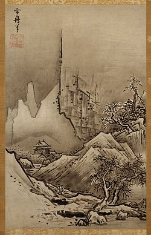
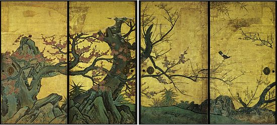
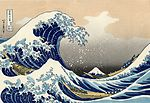
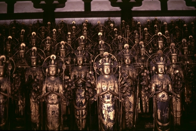

Изобразительное искусство
-
Живопись
Период Ямато
В периоды Кофун и Асука (IV - VII века) наряду с внедрением китайской письменности (иероглифы), создания государственного режима по китайскому образцу и распространения буддизма, из Китая в Японию были завезены и многие произведения искусства. После этого в Японии начали воспроизводить произведения живописи в стиле аналогичном китайскому.
Период Нара
С дальнейшим развитием буддизма в VI и VII веке в Японии процветала религиозная живопись и была использована для украшения многочисленных храмов, возведенных аристократией, но в целом в период Нара в Японии вклад в развитие искусства и скульптуры был больше, чем в живопись. Ранние из сохранившихся картин этого периода включают росписи на внутренних стенах храма Хорю-дзи в префектуре Нара. Эти росписи включают рассказы о жизни Будды Шакьямуни.
Период Хэйан
Начиная с X века в японской живописи выделяют направление ямато-э, картины представляют собой горизонтальные свитки, которыми иллюстрировали литературные произведения.
Период Муромати
В XIV веке развивается стиль суми-э (монохромная акварель), а в первой половине XVII века художники начинают печататьукиё-э - гравюры на дереве, изображавшие гейш, популярных актёров театра кабуки и пейзажи. Влияние популярности гравюр укиё-э на европейское искусство XVIII века называют японизмом.
Адзути-Момояма
В резком контрасте с живописью периода Муромати, выступает живопись периода Адзути-Момояма (1573-1603). Ей характерен полихромный стиль с широким использованием золотой и серебряной фольги. В то время школа Кано пользовалась большой известностью и престижем. Эйтоку Кано, основатель школы Кано, занимался росписью стен потолка и раздвижных дверей для разделения комнат. Такие расписные элементы служили украшением замков и дворцов военной знати.
Период Мэйдзи
Со второй половины XIX века было отмечено разделение искусства на конкурирующие европейский и традиционный стили. Во время периода Мэйдзи, Япония подверглась большим политическим и социальным изменениям в процессе европеизации и модернизации, организованной правительством. Западный стиль живописи официально продвигался правительством. Перспективные молодые художники были посланы за границу для учебы, а иностранные художники приезжали в Японию, для разработки школьной программы по искусству. Тем не менее, после первоначального всплеска интереса к западному художественного стилю, маятник качнулся в противоположную сторону, произошло возрождение традиционного японского стиля. В 1880 году, западный стиль искусства был запрещен на официальных выставках и подвергался резкой критике.
{kind=link}
Японская живопись - один из наиболее древних и изысканных из японских видов искусств, характеризуется широким разнообразием жанров и стилей. Для японской живописи, как и для литературы, характерно отведение ведущего места природе и изображение её в качестве носительницы божественного начала.
{kind=link}
Начиная с X века в японской живописи выделяют направление ямато-э, картины представляют собой горизонтальные свитки, которыми иллюстрировали литературные произведения. В XIV веке развивается стиль суми-э, а в первой половине XVII века художники начинают печатать укиё-э - гравюры на дереве, изображавшие гейш, популярных актёров театра кабуки и пейзажи. Влияние популярности гравюр укиё-э на европейское искусство XVIII века называют японизмом.
Каллиграфия
Каллиграфия пришла в Японию из Китая. С середины II тысячелетия до н. э. в древнекитайские пиктограммы постепенно упрощались, приспосабливались для более быстрого написания. К началу нашей эры пиктографические мотивы превратились в собственно иероглифы с квадратообразной формой. Они слагалась из комбинаций линий, штрихов и точек и со временем оформилось несколько стилевых направлений: устав (полное изображение иероглифов), полускоропись и скоропись. Дальневосточная каллиграфия является один из ведущих видов искусства. Идеограммы обозначают целые понятия и обладают глубоким философским смыслом. Такая форма фиксации информации способствует формированию структурно-образного восприятия людей. Важно не просто понять написанное, но и увидеть и почувствовать, как написано. Каллиграфическое письмо появилось в Японии в VII веке. На базе китайских стилей японские каллиграфы создали несколько новых стилей, которые отличаются гораздо большей простотой и эмоциональностью. В эпоху Эдо (1600-1868) появились такие декоративные стили, как кабуки-модзи и дзё-рури-модзи. Эти стили использовались для создания афиш и программ театров Кабуки и Дзёрури.
Дзэн-буддизм
Искусство японской каллиграфии требует максимальной сосредоточенности и спонтанности исполнения. Японская каллиграфия испытала большое воздействие эстетики и практики дзэн-буддизма. В дзэн она является и средством медитации, путем познания и своего рода учебным пособием. С XV века термин «бокусэки» («след туши»), которым называли всю японскую каллиграфию, использовали преимущественно по отношению к дзэнскому направлению.
Современная каллиграфия
Современная японская каллиграфия сохраняет многовековые традиции, создавая и развивая на их основе новые направления. В 1948 г. была создана Ассоциация мастеров современной каллиграфии. Она и по сей день является одним из ведущих объединений в области каллиграфии. Ежегодно данная организация устраивает выставки, демонстрируя копии старинных образцов, работы современных мастеров широкого круга, а также осуществляя показ произведений каллиграфов высшего класса. Одним из направлений «поиска новых изобразительных решений» ассоциации являются укрупненные и обобщенные образы, написанные в динамичной манере. Это оригинальное направление, а также принцип артистической «игры кистью и тушью» стали характерной особенностью японской каллиграфии ХХ века. В начале 1950-х годов появилось абстрактное направление каллиграфии. Иероглифы написанные в этом стиле практически утратили конкретное смысловое значение, дав импульс экспрессивной импровизации. Абстрактная каллиграфия более открыто и непосредственно доносит до зрителя мысли, чувства и настроение автора, сохраняя при этом традиционную культуру владения кистью и тушью.
{kind=link}
В Японии каллиграфия считается одним из видов искусств и носит название сёдо. Наравне с рисованием каллиграфия преподаётся в школах. Искусство каллиграфии было завезено в Японию вместе с китайской письменностью. В старину в Японии признаком культурного человека считалось владение искусством каллиграфии. Существует несколько различных стилей написания иероглифов. Совершенствованием стилей написания иероглифов занимались буддийские монахи.
Скульптура
Мало где в мире сохранилось такое впечатляющее количество средневековых скульптур, как в Японии. Это тем более удивительно, что почти вся скульптура делалась из дерева. Из дорогой бронзы выполнялись лишь самые почитаемые изображения - например, гигантские Будды в Наре (храм Тодайдзи) и Камакуре. Каменная и глиняная скульптура не прижились, хотя сохранилась уникальная Паранирвана Будды в пагоде монастыря Хорюдзи.
В период Камакура (1185–1333), когда после смут XII в. происходит восстановление древних храмов Нары, мастера вновь обращаются к древним экспрессивным и динамичным образам. От этого времени дошло много ансамблей скульптур, в том числе самый большой в Японии - из храма Сандзюсангендо в Киото. Изображение 1000-рукой Каннон окружено здесь еще 1000 статуй Каннон (каждая в человеческий рост), а также уникальным набором из 28 небесных стражей. Пристальный интерес к человеку проявляется в удивительных по реализму и проникновенных изображениях почитаемых монахов, бродячих проповедников (Куя в монастыре Рокухарамисудзи в Киото), обожествленных правителей (Уэсуги Сигэфуса, музей в Камакуре). Период Камакура оказывается последним расцветом японской буддийской скульптуры, которая в дальнейшим по разным причинам приходит в упадок.
Самым древним из видов искусств Японии является скульптура. Начиная с эпохи Дзёмон изготавливались разнообразные керамические изделия, также известны глиняные фигурки-идолы догу. В эпоху Кофун на могилах устанавливались ханива - скульптуры из обожжёной глины, поначалу простых цилиндрических форм, а затем более сложные - в виде людей, животных или птиц. История скульптуры в Японии связана с появлением в стране буддизма. Традиционная японская скульптура - это чаще всего статуи буддистских религиозных понятий. Одна из самых древних скульптур в Японии - деревянная статуя будды Амитабхи в храме Дзенко-дзи. В период Нарабуддистские статуи создавались государственными специалистами-скульпторами. В период Камакура расцвела школа Кей, ярким представителем которой был Ункей. В качестве основного материала для скульптур использовалось дерево. Статуи часто покрывали лаком, позолачивали или ярко окрашивали. Также в качестве материала для статуй использовалась бронза или другие металлы.
Декоративно-прикладное искусство
- Традиционные японские куклы
- Нэцкэ
- Оригами
- Икэбана («кадо» — путь цветов)
- Бонсай
- Керамика для чайной церемонии
- Ручная роспись тканей
- Тэмари
{kind=link}
{kind=link}
{kind=link}
{kind=link}
{kind=link}
{kind=link}
{kind=link}
{kind=link}
{kind=link}
{kind=link}